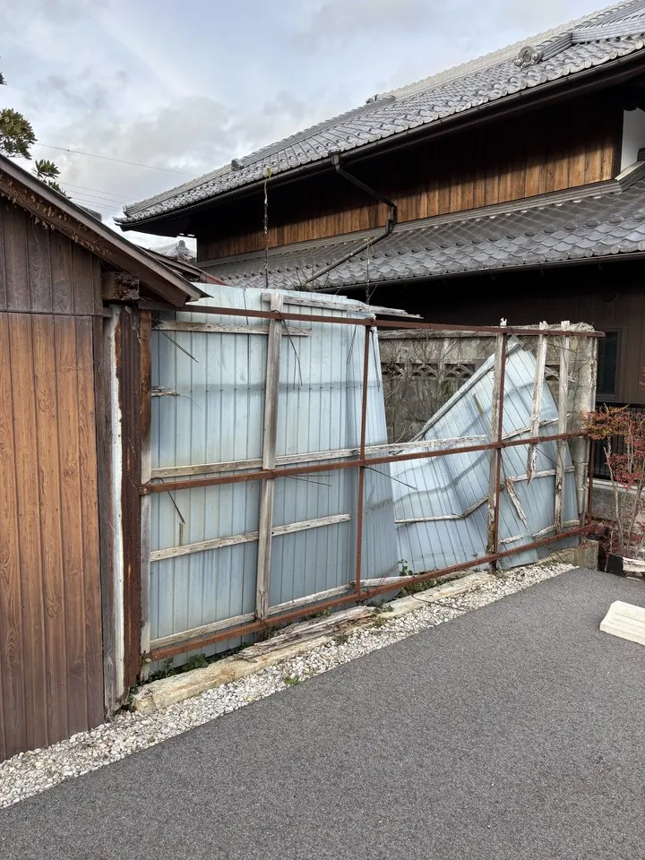
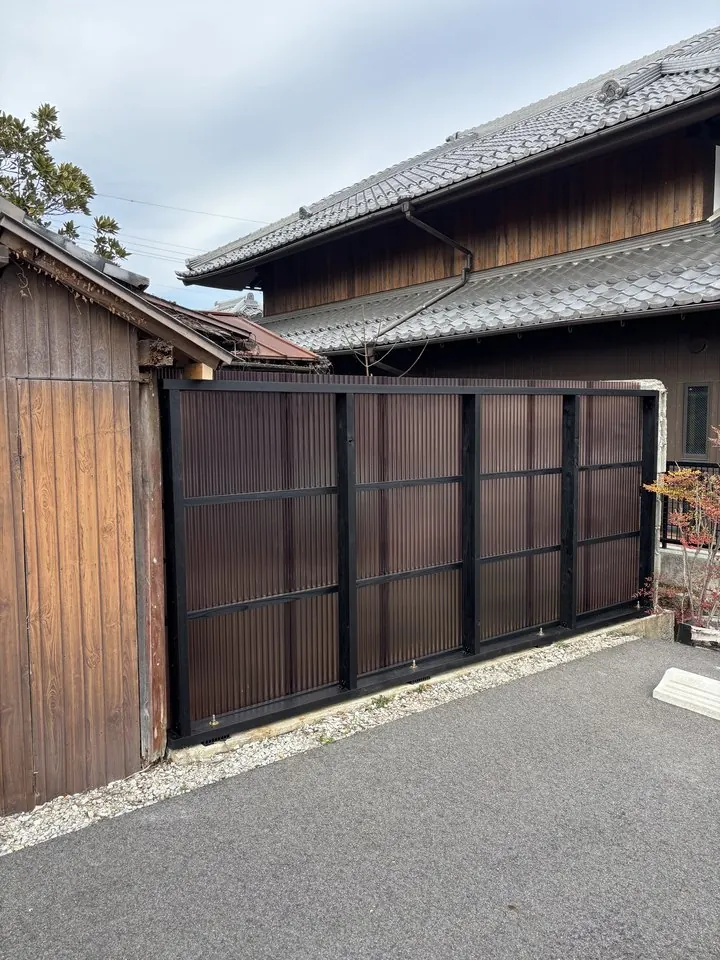
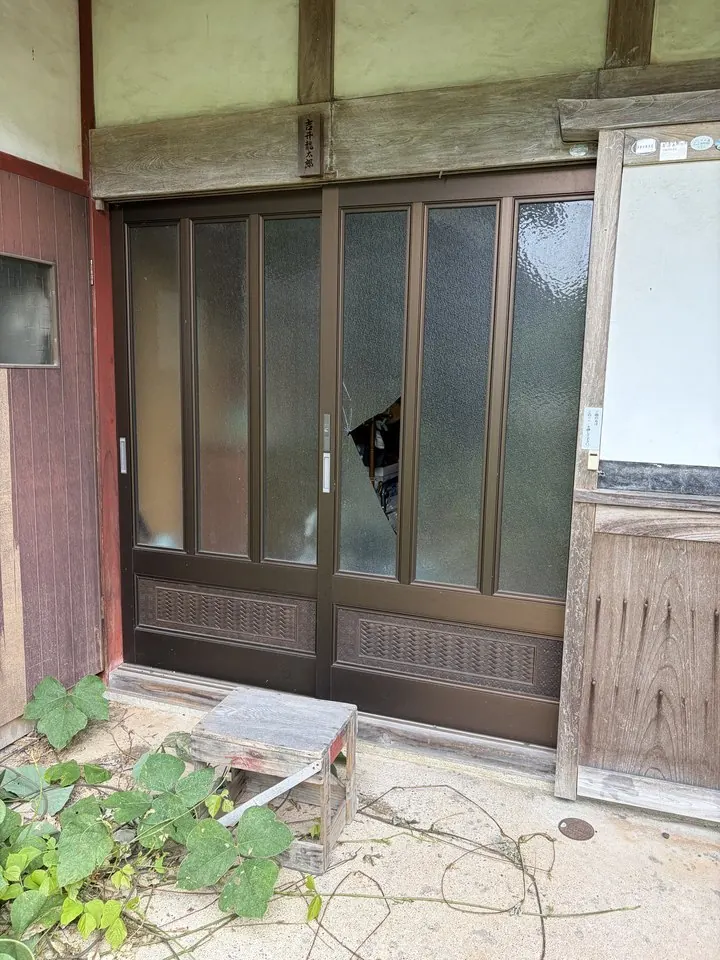
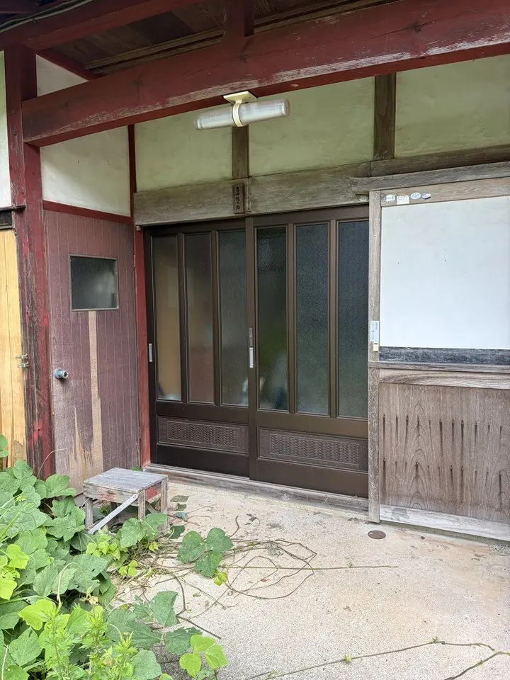
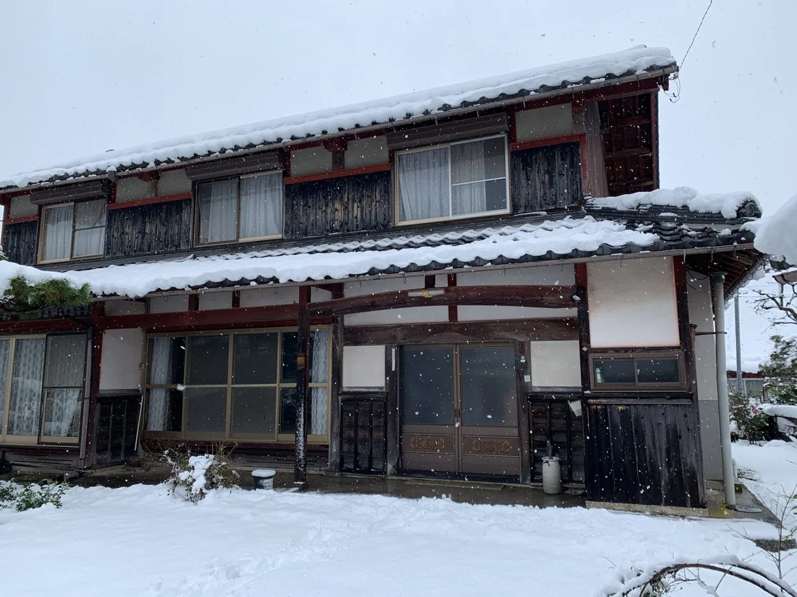
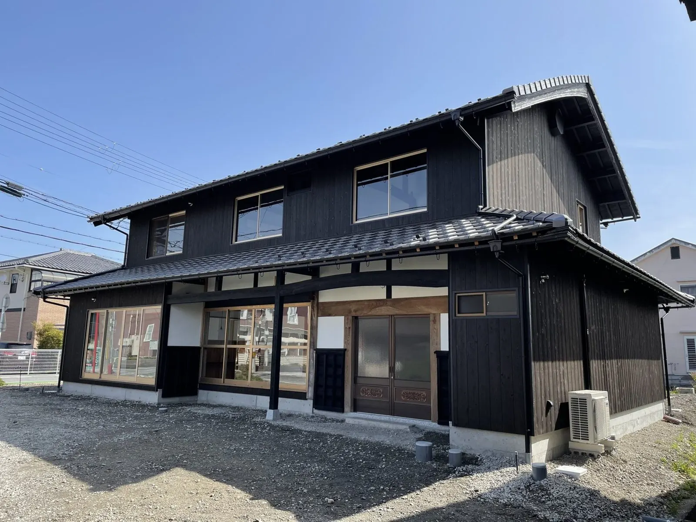

NAGAHAMA, SHIGA ／ 昭和55年創業
家のこと、気になったら。
長浜の大工に、ご相談ください。
建具やガラスの小さな修理から、古民家・空き家のご相談まで。工事の前と後を、写真でお見せします。
建具やガラスの小さな修理から、古民家・空き家のご相談まで。工事の前と後を、写真でお見せします。
倒れた塀、割れたガラス、古い建具、床の段差。前と後を、写真でお見せします。


倒れた塀を、建て直しました。


引き戸のガラスを、入れ替えました。
写真をクリックすると、大きく見られます。
完成した姿だけでなく、工事の前の様子と、途中の工程も載せています。どこを、どう直したのかが分かります。


〒526-0102 滋賀県長浜市落合町640番地2 TEL 0749-72-3908 FAX 0749-50-1081 ／ 不定休
LINEか電話で、お気軽に。ご相談だけでも結構です。
または、お電話で
0749-72-3908
不定休